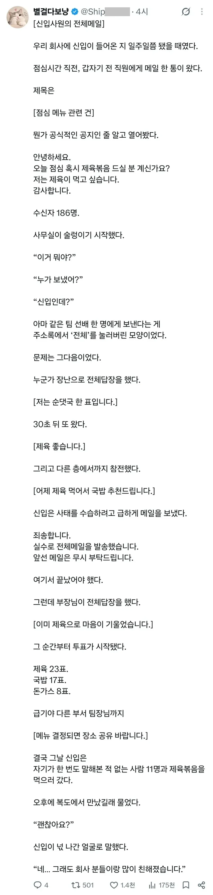

신입이 전직원에게 점메추 메일 보냈다
댓글
니가 먼저 유혹한거다?
이정도면 컬투쇼 수준이지 ㅋㅋㅋㅋ
상사 입장에서는 개꿀 잼 이벤트인데 ㅋㅋㅋㅋㅋ 신입 입장에서는 등땀존나 났을 듯ㅋㅋㅋ
너무야해요
갑자지 이뤄진 점십 제육 회식
밥만 먹으면 되는 즐거운 이벤트 발생!
귀엽네 ㅋㅋㅋㅋㅋㅋㅋ 나라면 욕박은것도 아니고 뭐 저정도는 이해해줄듯
다들 대처 귀엽게 잘햇네ㅎㅎ
ㅋㅋㅋ 두 번 다시 안그러면 되지뭐
ㅋㅋㅋ 회사생활 재밌게 하네 ㅋㅋㅋ
사람들 좋네 ㅋㅋㅋ
전체 회신으로 사고 나는 경우는 실제로 종종 있기에 어지간한 회사는 구성원 전체에 대한 발송 권한을 제한해 두는 경우가 많음